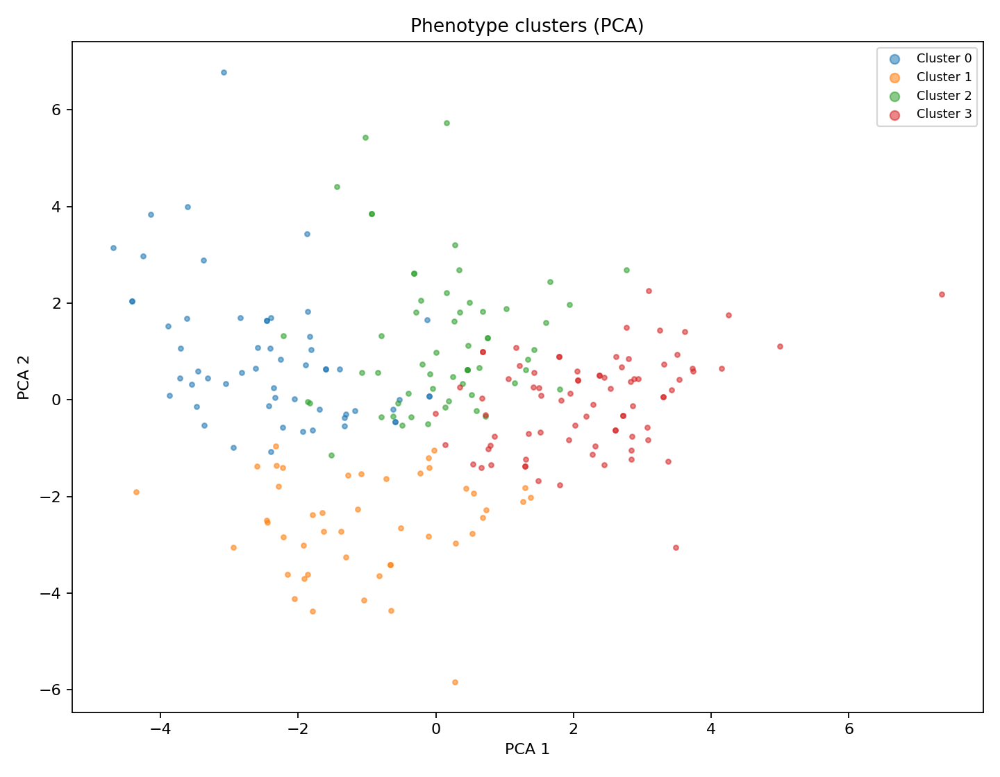
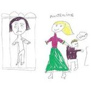
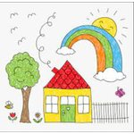
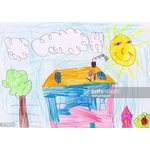
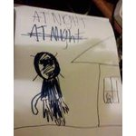
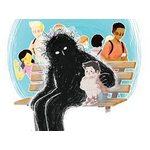
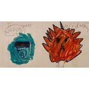
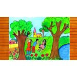
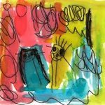
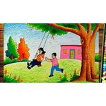

Clinical Phenotype Discovery
k=4, rows=240, train silhouette=0.14293165504932404,
projection=PCA

Split Cluster Counts
{
"train": {
"0": 57,
"1": 46,
"2": 58,
"3": 79
}
}
Cluster 0
Train count: 57
Label dist: {"Sad": 21, "Angry": 17, "Fear": 12, "Happy": 7}
High features
- empty_space_ratio: 0.97z
- top_mass_ratio: 0.77z
- dominant_orientation_abs: 0.23z
- warm_ratio: 0.18z
- centroid_x_norm: 0.11z
- component_count_norm: -0.07z
Low features
- fg_area_ratio: -0.97z
- figure_integrity_proxy: -0.94z
- shading_ratio: -0.90z
- centroid_y_norm: -0.79z
- bottom_mass_ratio: -0.77z
- unique_hue_count: -0.72z
Sad
real_train_000169 Sad
Sad
real_train_000181Fear
real_train_000154
Fear
real_train_000056
Cluster 1
Train count: 46
Label dist: {"Happy": 23, "Sad": 11, "Fear": 8, "Angry": 4}
High features
- bottom_mass_ratio: 1.31z
- centroid_y_norm: 1.31z
- empty_space_ratio: 0.43z
- unique_hue_count: 0.20z
- centroid_x_norm: 0.05z
- stroke_darkness_std: -0.07z
Low features
- top_mass_ratio: -1.31z
- stroke_darkness_mean: -0.86z
- shading_ratio: -0.78z
- figure_integrity_proxy: -0.54z
- dark_color_ratio: -0.52z
- dominant_orientation_abs: -0.52z
Happy
real_train_000054
Happy
real_train_000129Happy
real_train_000204
Happy
real_train_000073
Cluster 2
Train count: 58
Label dist: {"Fear": 19, "Sad": 16, "Angry": 15, "Happy": 8}
High features
- shading_ratio: 0.84z
- stroke_darkness_mean: 0.71z
- dark_color_ratio: 0.64z
- stroke_darkness_std: 0.46z
- dominant_orientation_abs: 0.44z
- top_mass_ratio: 0.34z
Low features
- skeleton_break_count_norm: -0.40z
- unique_hue_count: -0.35z
- bottom_mass_ratio: -0.34z
- component_count_norm: -0.31z
- centroid_y_norm: -0.28z
- bbox_area_ratio: -0.25z

Fear
real_train_000116
Fear
real_train_000212Sad
real_train_000043
Angry
real_train_000077Cluster 3
Train count: 79
Label dist: {"Fear": 22, "Angry": 21, "Sad": 21, "Happy": 15}
High features
- fg_area_ratio: 1.10z
- skeleton_break_count_norm: 0.92z
- figure_integrity_proxy: 0.89z
- unique_hue_count: 0.61z
- shading_ratio: 0.48z
- stroke_darkness_mean: 0.45z
Low features
- empty_space_ratio: -1.10z
- warm_ratio: -0.20z
- dominant_orientation_abs: -0.19z
- top_mass_ratio: -0.04z
- centroid_x_norm: 0.00z
- centroid_y_norm: 0.01z

Happy
real_train_000214 Fear
Fear
real_train_000199
Sad
real_train_000190
Happy
real_train_000004